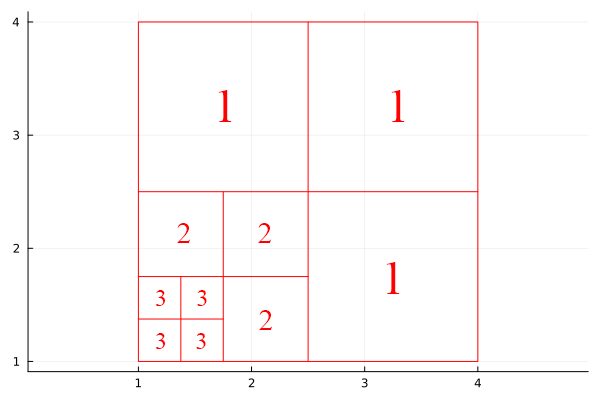

Table of Contents generated with DocToc
Project
This project is from [Professor Saito's paper][paper], fully converted from Matlab to Julia. The implementation is almost identical with Matlab except some minor feature differences or lack of features like matlab meshgrid is not in Julia so similar feature is customly built. Similarly, matlab repmat is equivalent to Julia repeat.
Julia
This project is running in [Julia version 1.12][JuliaVersion] and fully tested in mac os and windows with version 1.8-1.86 and developed in VS Code with Julia [extension][JuliaExtension] version 1.47.2.
/
/data: image of barbara converted to data
/polyharmonictrigtransforms: package toml
/src: julia source files
/tests: julia test filesThe above is the file structure.
Read more about [Julia][JuliaDoc], [Julia Plot][JuliaPlot] and [Matlab][MatlabDoc].
PolyHarmonicTrigTransforms
include(".PolyHarmonicTrigTransforms.jl")
using .PolyHarmonicTrigTransforms
julia> dst
dst (generic function with 2 methods)
julia> llst
llst (generic function with 2 methods)
julia> solvelaplace
solvelaplace (generic function with 1 method)LLST
This Julia project focuses on LST (Local Sine Transformation) from [Professor Saito's paper][paper]
LLST - Laplace LST
To test llstapprox2, it requires 3 inputs: data, leveled list, range.
In a high level, llstapprox2.jl calls llst.jl and calculates the coefficients into grids and llstapprox2.jl determines the boundaries/borders/corners/interior data to remove/process via split_llst_coefs and at the end of llstapprox2.jl, combines the boundaries/borders/corners/interior data into a grid through merge_llst_coefs then calculates the PSNR of the processed data and raw data.
A sample test with 127x127 dataset:
n=127
x = LinRange(-1,1,n)
y = LinRange(-1,1,n)
Gaussian = zeros((length(x), length(y)))
for i in 1:n
for j in 1:n
t = exp(-(x[i] + 1/3)^2 - (y[j] + 1/3)^2)
Gaussian[i, j] = t
end
end
# test for J = 1
levlist1 = [1 1 1 1]
krange1 = [1:n^2;]
psnr = llstapprox2(Gaussian, levlist1, krange1)To test LLST with the same data from the above:
llst_data = llst(Gaussian, levlist1)Reference: [Professor Saito's paper][paper] page 13 Figure 3(a).
PHLCT
The PHLCT (PolyHarmonic Local Cosine Transformation) from [Professor Saito's paper][paper] Chapter 6.2.2. (This PHLCT was compared with the version from Professor Katsu Yamatani: phlct2d and iphct2d)
PHLCT - PolyHarmonic LCT
To test PHLCT, it requires 2 inputs: data and the size of block.
In a high level, PHLCT has 3 methods: phlct_forward, phlct_backward, and phlct_restore. The phlct_forward is calculating the DCT coefficients of u = in - v where v denotes the PolyHarmonic function.
The phlct_backward reconstructs the data from DCT coefficients and PolyHarmonic function and returns the data close to the original data.
To run PHLCT, run phlct_forward then phlct_backward it should return the original input. For Professor Yamatani's version, run phlct2d then iphlct2d.
The phlct_restore attempts to restore the data back to the original data from truncation by referencing the quantization table to each blocks.
To test PHLCT:
n = 8
bfo128 = [...] #input data
forward = phlct_forward(bfo128, n)
backward = phlct_backward(forward, n)
#Professor Yamatani's version
phlct = phlct2d(bfo128, n)
iphlct = iphlct2d(phlct, n)Reference: [Professor Saito's paper][paper] page 30 Chapter 6.2.2.
Examples
Basic DST/IDST round-trip:
using .PolyHarmonicTrigTransforms
x = randn(8)
y = dst(x)
x_rec = idst(y)
@assert maximum(abs.(x_rec - 4 .* x ./ 4)) < 1e-12 # numeric checkPHLCT forward/backward round-trip (block size N):
using .PolyHarmonicTrigTransforms
n = 8
img = randn(n, n)
coeffs = phlct_forward(img, n)
img_rec = phlct_backward(coeffs, n)
@assert norm(img - img_rec) / norm(img) < 1e-12Image Testing
To test images, first take your chosen image and convert it into a square image (i.e. size n x n where n is the new size of the image after using tools to square it).
Then, use the above sample set of 5 x 5 dataset with the following changes:
n = 5
x = LinRange(-1, 1, n)
y = LinRange(-1, 1, n)
Gaussian = zeros((length(x), length(y)))
function GaussianFromImage(image_path)
img = load(image_path)
width, height = size(img)
Gaussian = zeros(Float64, (width, height))
for i in 1:width
for j in 1:height
pixel_value = Gray(img[i, j])
t = exp(-((1 - i/3)^2 + (1 - j/3)^2))
Gaussian[i, j] = t
end
end
return Gaussian
end
image_path = "(insert your image path)"
Gaussian = GaussianFromImage(image_path)
img = load(image_path)
width, height = size(img)Leveled List
Wickerhauser explains from the book Adapted Wavelet Analysis, a more efficient way to describe a wavelet packet basis using an encounter order numbering scheme.

Information about subsquares is sent in the order they are encountered during a depth-first (recursive) traversal of the wavelet packet tree.
The traversal visits children in the order: upper-left → upper-right → lower-left → lower-right, matching the typical block scan order.
To define the basis, you only need to list the levels of the subsquares in this encounter order. This list determines where recursion stops and uniquely specifies the squares.
Example: the basis in Figure 9.13 can be described by the level list (2, 3, 3, 3, 3, 2, 2, 1, 1, 1).
This method is much more efficient, using at most 4L numbers with log₂L bits each, about 10× less data than the previous method.
This approach is called the “levels list basis description method” and is adopted as the standard method because of its efficiency.
Helper
The function drawpartition2d2 is used to draw the boundaries. It takes 5 parameters: signal::AbstractMatrix, liste::AbstractMatrix; width=nothing, image=nothing, fit=false. Required:
signalis the data matrixlisteis the level list
Optional:
widthis the width of the plot line, defaults to0.8imageis the path of the background imagefitis thebooleanto fit the image to the plot
n = 5
x = LinRange(-1, 1, n)
y = LinRange(-1, 1, n)
Gaussian = zeros((length(x), length(y)))
drawpartition2d2(Gaussian, [1 1 1], image="test.jpg", fit=true)Troubleshooting
- Package is missing.
To install a package:
In Julia CLI:
julia> import Pkg; Pkg.add("MAT")or In a Package Manager ]
julia> ]
(@v1.8) pkg> add "MAT"Example plain HTML site using GitLab Pages.
Learn more about GitLab Pages at https://pages.gitlab.io and the official documentation https://docs.gitlab.com/ce/user/project/pages/.
[paper]: https://www.math.ucdavis.edu/~saito/publications/saito_phlstrev.pdf [JuliaVersion]: https://julialang.org/downloads/ [JuliaDoc]: https://docs.julialang.org/en/v1/ [JuliaExtension]: https://marketplace.visualstudio.com/items?itemName=julialang.language-julia [MatlabDoc]: https://www.mathworks.com/help/matlab/ [JuliaPlot]: https://docs.juliaplots.org/stable/